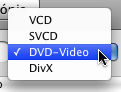
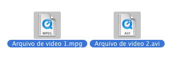
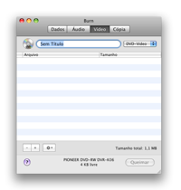
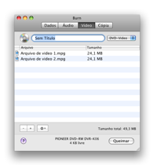
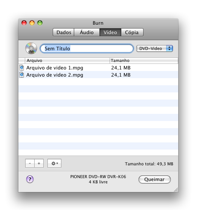
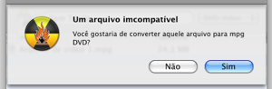
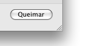
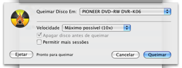
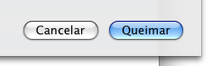
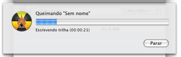

Queimando Disco de Vídeo:
Burn pode criar quatro tipos de disco de vídeo. VCD é o primeiro formato de disco de vídeo digital. Após esse veio o SVCD que tem uma resolução mais alta. Então vieram os discos DVD-Video que são agora o modo comum para distribuir vídeo digital. Muitos dos tocadores de DVD modernos podem tocar discos DivX. Este formato é especialmente popular na internet. Arquivos DivX são geralmente um pouco menores que MPEG2 (usados em discos DVD-Video), mas ainda assim tem qualidade razoável.
1 Selecionar um formato
Selecione um formato no menu popup. é Importante saber que
discos de vídeos são suportados pelo seu tocador.
Verifique seu manual ou tocador para ver quais são suportados.

2 Selecionar alguns
arquivos de vídeo
Selecione alguns arquivos de vídeo, vários arquivos de
vídeo são suportados.
Nota: alguns arquivos protegidos Quicktime podem não funcionar.

3 Jogar eles na lista:
Jogue os arquivos selecionados na lista. Se os arquivos já
estiverem no formato correto eles serão adiciondos. Se
não o Burn vai solicitar que converta eles para o formato
correto.
 


4 Clicar em Queimar
Isso irá mostrar uma janela.

5 Selecionar
opções
Selecione opções para a sessão de
gravação. Para mais ajustes, veja as Preferências
sob o menu Burn.

6 Gravar o disco
Agora clique Queimar para gravar o disco.

7 Burn
vai gravar o disco
Enquanto grava o Burn irá mostrar uma janela com o estado da
gravação.
